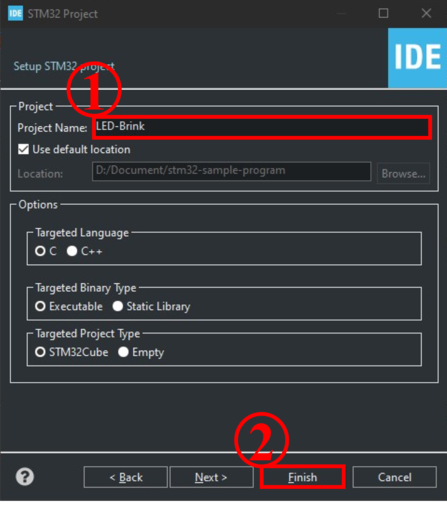

環境構築, Lチカ
STMマイコンのプログラムを書く際に必要となるソフトウェアのインストールからテストコードの作成・実行までを解説する．
ソフトウェアのインストール
ここでは，マイコンのプログラを書くにあたって有益なソフトウェアを紹介する．本ドキュメントでは使用しないソフトウェアも入っているため，ここに紹介するソフトウェアをすべてインストールする必要はない．ただし，STM32CubeIDEだけは必ずインストールしてほしい．
ST社のソフトウェアのダウンロードには名前，メールアドレスの入力もしくは，ログインが必要となる． ここでは，アカウントを作成することを推奨する．
STM32CubeIDE
本ソフトウェアはSTM32用統合開発環境であり，ペリフェラル設定からプログラムの書き込み，デバックまでを一貫して行うことができる．STMマイコンの開発を行ううえでほぼ必須となるソフトウェアである．
webサイトにアクセスしたら ソフトウェアの入手 より各自の環境に合う最新のものをダウンロード，インストールしてほしい．Windowsであれば STM32CubeIDE-Win が該当する．
STM Studio
グローバル変数の値をほぼリアルタイムでモニタリングするためのソフトウェアである．記事の執筆時点において NRND となっているため，近いうちに提供が終了となる可能性がある．後継のソフトウェアとしてSTM32CubeMonitorが存在する．
STM32CubeMonitor
動作中のマイコンをモニタリングするためのソフトウェアである．筆者は本ソフトウェアにあまり触れていないため詳しいことは分からない．
STM32CubeProgrammer
実行ファイルをマイコンに書き込むために使用するソフトウェアである．マイコンへの書き込みはSTM32CubeIDEでも可能であるが，こちらの方が高機能である．
STM32CubeIDEを使ってLチカをする
「Lチカ」とはLEDを点滅させることを言う．プログラミングを学んだことがあれば "Hello World" に出会ったことがあると思うが，Lチカはそれのマイコン版だと考えてほしい．
STM32CubeIDEの起動

1. STM32CubeIDEを起動すると，Launcherが表示される
2. workspaceの選択をする
"workspace" とはSTM32CubeIDEで作成するプロジェクトを置く場所である．デフォルトのまま
Launchを押して問題ない． 3. STM32CubeIDEが起動が完了する 初回起動時はInfomation Centerが開かれているが，特に必要ないのでそのタブは消してよい．
Projectの作成
- メニューバーから
File/New/STM32 Projectを選択するデータのダウンロードが自動で行われることがある
- マイコンの選択を行う
Board Selectorタブを選択するCommercial Part Numberに "NUCLEO-F446RE"と入力する- ボードを選択する
- 次へ進む

Project Nameを入力する
以上で，プロジェクトの作成は終わりである．3の後でいくつかダイアログボックスが表示されることがあるが，すべて Yes/OK を選べば問題ない．
ペリフェラルの設定
ここでは，マイコンに搭載されている機能のうち 何を使用するか と どのピンを使用するか を設定する．今回はNucleoボードに搭載されているLEDを使用するため，ここでの設定事項は特にないが，画面の説明だけ記載しておく．
赤で囲われた部分にはマイコンが搭載している機能が一覧形式で表示されている．ここから設定したい項目を選択すると，黄色で囲われた部分が表示される．ここでは，各機能の設定ができる．
青で囲われた部分ではマイコンのどのピンを使用するかを確認・設定できる．また，各ピンにはPA0,PA1,...,PC15,... のように名前が割り当てられている．この名前はソースコードを書く際に，ピンを指定するために必要となる．
PA5（下の列の左から5番目） に LD2[Green Led]とある．このピンが今回のプログラムで点滅させるLEDに接続されている．いまは特に設定することはないのでこのタブは閉じてよい．

プログラミング
プロジェクトを作成したとき，ペリフェラルの設定を変更したときに，その設定を反映したプログラムが自動生成される．自動生成されたコードとユーザーが書いたコードを区別するために，自動生成されたファイルにはユーザーがコードを書いていい範囲が決まっているため注意が必要である．
/* USER CODE BEGIN xxxxx */ と /* USER CODE END xxxxx */ の間の記述はユーザーのコードとして認識される．
Project Name/Core/Src/main.cにプログラムを書いていく．編集が必要な部分を以下に示す．
/* USER CODE BEGIN WHILE */
while (1)
{
HAL_GPIO_WritePin(GPIOA, GPIO_PIN_5, GPIO_PIN_SET);
HAL_Delay(500);
HAL_GPIO_WritePin(GPIOA, GPIO_PIN_5, GPIO_PIN_RESET);
HAL_Delay(500);
/* USER CODE END WHILE */
/* USER CODE BEGIN 3 */
}
/* USER CODE END 3 */